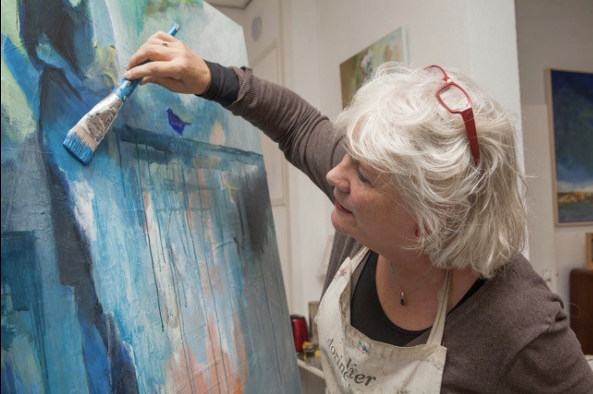
Beeldend kunstenaar in Zutphen
Waar Zutphen kleur krijgt.
In mijn atelier aan de Spittaalstraat schilder ik de IJssel, de stad, koeien en kleine vogeltjes. Kom kijken, koop of huur een werk, of schilder zelf een middag mee.
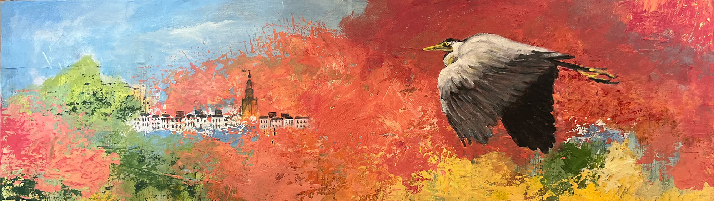
Aan de wand in het atelier
De skyline van Zutphen en Deventer, het IJsselfront in landschappen die niet bestaan, koeien, kippen en vogels. Ik werk met acryl, collage, muzieknoten en krantenletters, op doek, linnen, papier en hout.
Wat beschikbaar is wisselt. Ziet u iets wat u raakt, of wilt u iets vergelijkbaars? Bel of mail gerust. Bij een opdracht bent u altijd vrij om ervan af te zien.
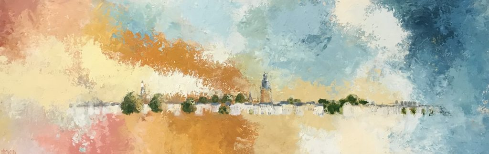
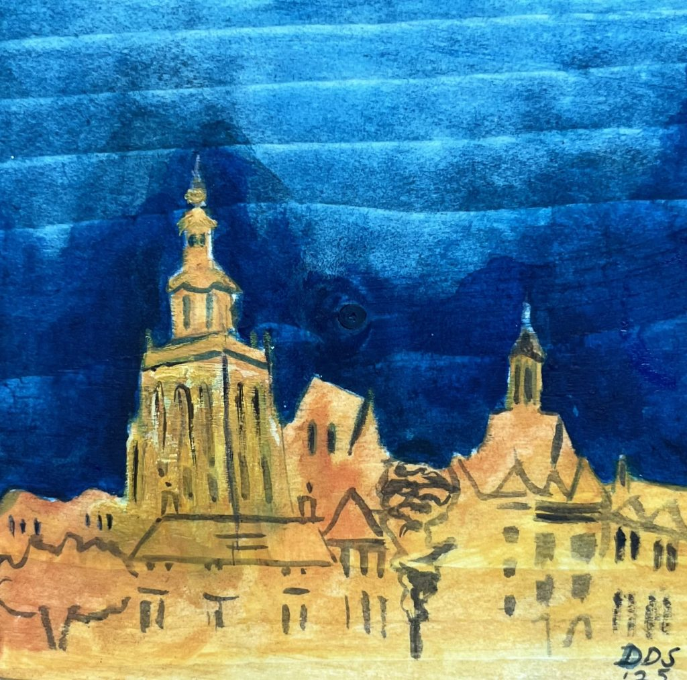
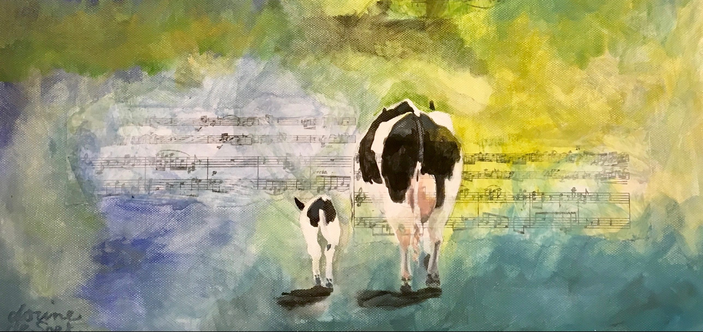
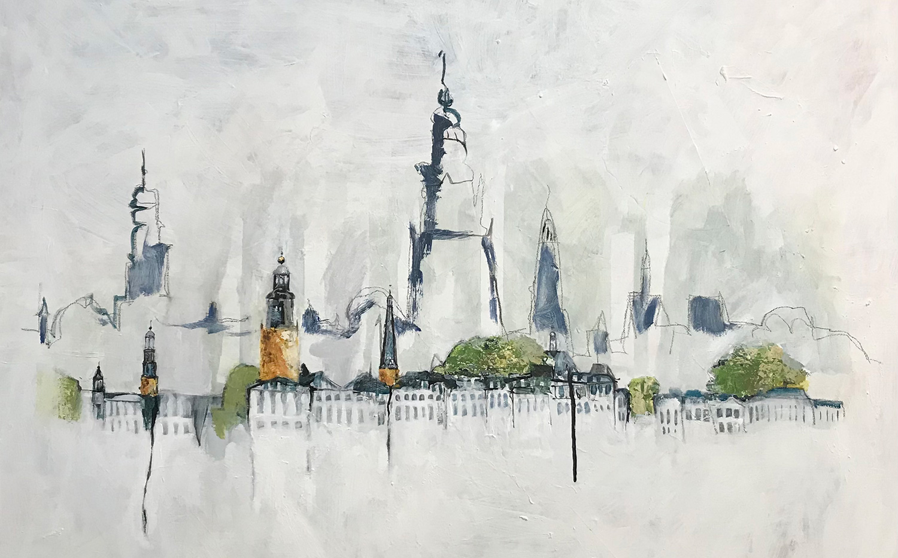
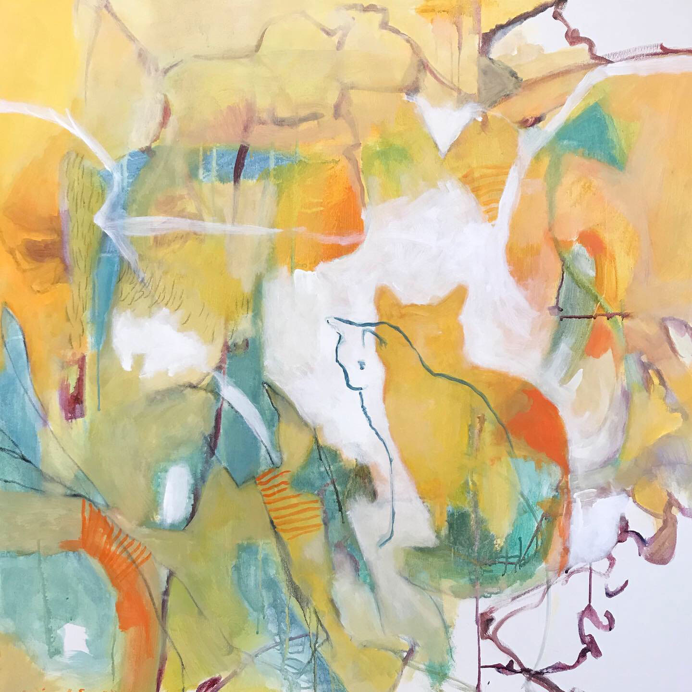
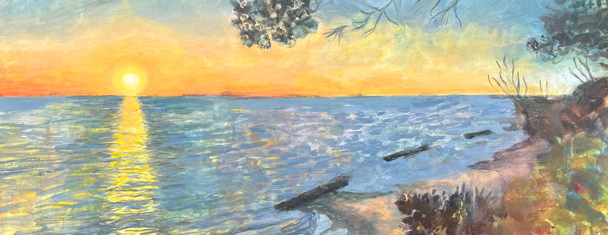
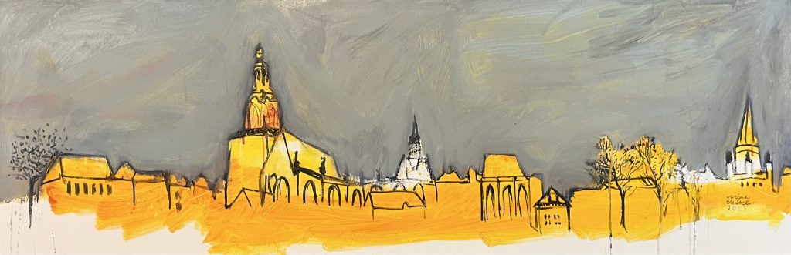
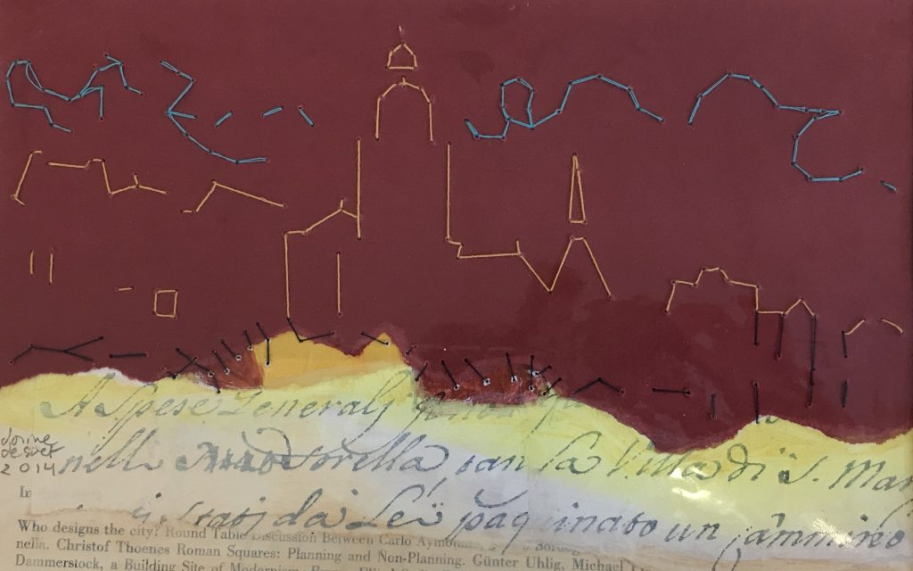
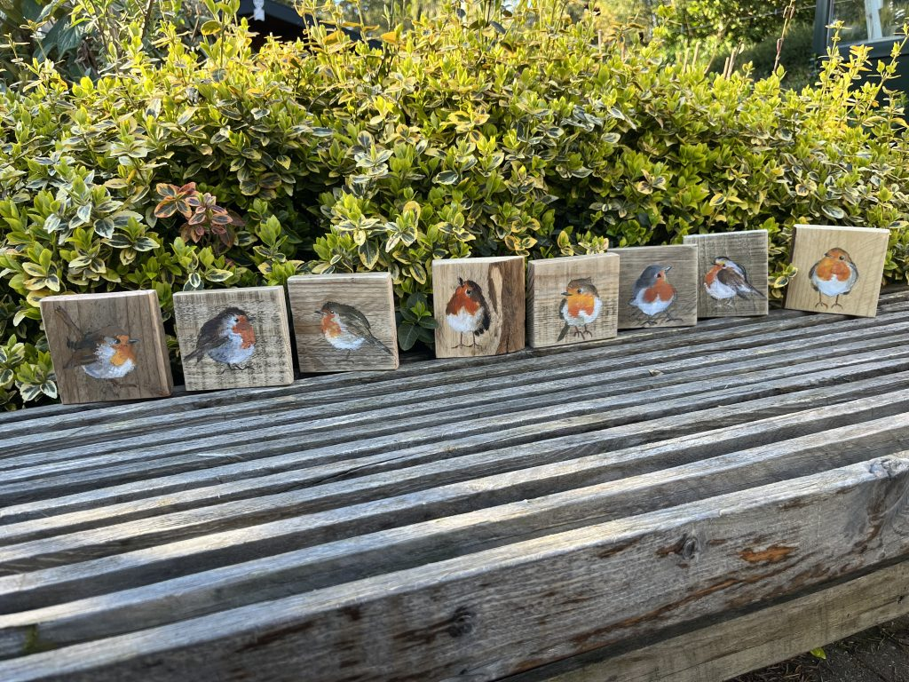
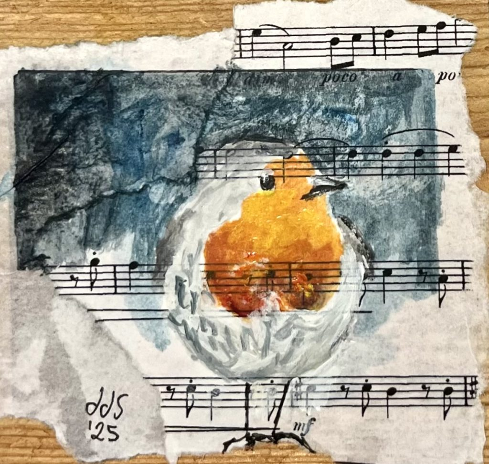
Klein werk, groot plezier
Roodborstjes op kleine vierkante doekjes van 10 x 10 cm en op stukjes hout. Klein, dus ook voor kleine bedragen te koop. Een mooi cadeau, of het begin van een eigen verzameling.
In het atelier staan ook de krantenkippen: vrolijke beeldjes van ongeveer 20 cm hoog, gemaakt van kranten en muzieknoten, in allerlei kleuren.
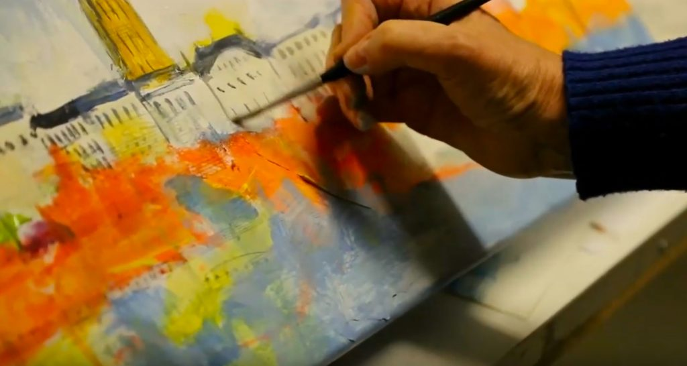
"De koe is voor mij een soort poort geworden, waarachter heel veel verschillende mogelijkheden van technieken liggen."
Ik ben Dorine
Een bevlogen kunstenaar met een hart voor dieren en voor Zutphen. Ik begon in Amsterdam met aquarel en modeltekenen, en ging wekelijks met een schildervriend naar Artis om de dieren te tekenen. Na een paar jaar durfde ik me aan te melden bij de Amsterdamse Akademie voor beeldende vorming.
Elke dag nieuwe dingen proberen, dat vind ik het mooiste wat er is. Eerst werken met collage, of de ondergrond een andere textuur geven. Zo wordt elk doek een klein mysterie: wat komt er tevoorschijn? Het resultaat is soms krachtig met harde kleuren, soms zacht in pasteltinten.
- 1980 Begonnen met schilderen in Amsterdam. Daarna in het oosten van het land opdrachten voor aquarellen van huizen, bloemen en bruidsboeketten.
- 1995 Na jaren schilderen bij Jan Slijkhuis in Deventer en Atelier Sabi in Eefde: lid van een kunstenaarscollectief in de Walstraat in Deventer.
- 2000 De vraag naar mijn werk groeide hard. Eigen atelier aan de Spittaalstraat 92 in Zutphen.
- 2008 Begonnen met huur/koop, zodat u een schilderij rustig in maandelijkse bedragen kunt afbetalen.
Een schilderij aan uw muur, zonder groot bedrag in één keer
Met huur/koop betaalt u een schilderij op een prettige manier maandelijks af. Zo hangt het werk al thuis terwijl u het afbetaalt. Bel of mail mij, dan bespreken we samen wat past.
Eén middag schilderen, één schilderij mee naar huis
In mijn workshop abstract en/of figuratief schilderen komen veel technieken aan bod. Ik werk met één persoon tegelijk, zodat we echt samen aan de slag gaan. U loopt misschien tegen een blokkade aan, en die overwinnen we samen. Daar kunt u thuis nog lang op teruggrijpen.
-
1
We kiezen samen een datum
Bel of mail, dan plannen we een middag die u goed uitkomt.
-
2
Van 14.00 tot 17.00 uur in het atelier
Drie uur schilderen aan de hand van een stappenplan dat ik zelf heb ontwikkeld.
-
3
U gaat naar huis met een schilderij
Klaar om op te hangen. Het stappenplan krijgt u op papier mee, zodat u thuis verder kunt.
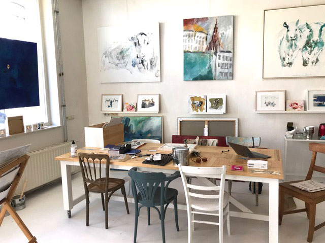
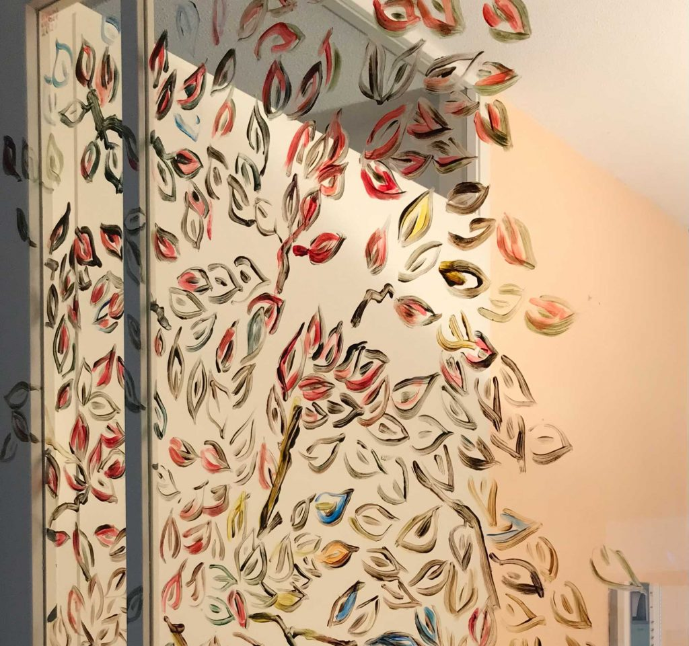
Kom langs in het atelier
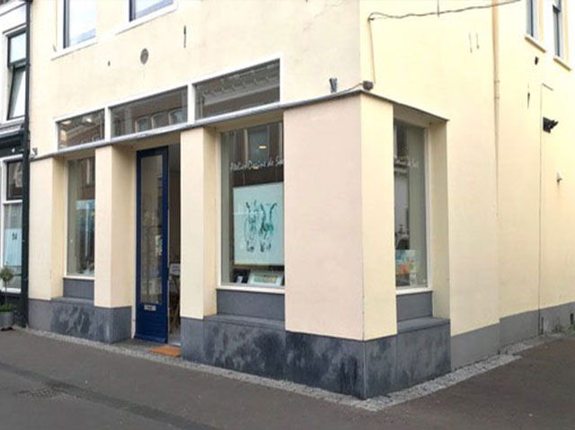
- Adres
- Spittaalstraat 92
7201 EG Zutphen
Route plannen - Open
- Donderdag 13.00 tot 17.00 uur
Andere dagen op afspraak - Telefoon
- 06 24 61 15 18
- info@dorinedesoet.nl